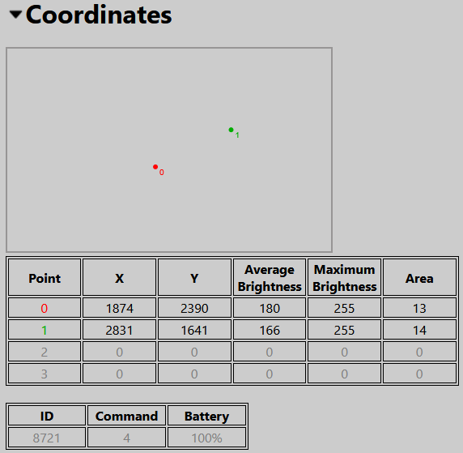
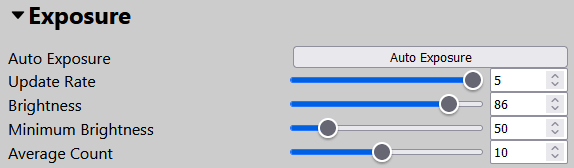
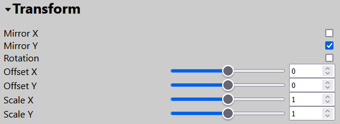

Sensor Settings
This page discusses all settings related to how the sensor detects bases and handles the data related to this.These settings can be accessed through the Foundry Module Configuration screen or the webserver.
The tab is divided into multiple sections which can be expanded or collapsed.
Coordinates

This section displays data of any detected infrared points (such as a base).
A point is a collection of one or more 'pixels' where infrared light was detected. Pixels close to each other will be combined to form a single point.
The top part of this section displays what the sensor can see. Any detected points will be displayed here with each point numbered and given a color.
The middle part gives the data of the first 4 points:
-
X/Y: The X and Y coordinates of the point.
-
Average Brightness: The average brightness of all pixels within the point.
-
Maximum Brightness: The brightness of the brightest pixel within the point.
-
Area: The size of the point.
The bottom part gives data transmitted by a detected base or pen (production sensor only):
- ID: The id of the base or pen.
- Command: The transmitted command (for example the buttons pressed on the pen).
- Battery: Approximate battery percentage.
Exposure

The exposure section can be used to configure things related to the detection of bases.
There are 2 brightness related settings ('Sensitivity' and 'Minimum Brightness') and an 'Auto Exposure' button.
You should try the auto exposure first:
- Grab a base and activate it, make sure it stays activated during the auto exposure process. Make sure only one base is visible to the sensor.
- Hold the base near the edge of the display
- Press the 'Auto Exposure' button
- The sensor will increase the sensitivity until it detects the base and its detected brightness is close to 255
Tip: You can keep the base activated without touching it: Touch the side of the base very short, wait for the red LED to switch off, touch the side of the base again. Repeat this 5 times and the red LED will start blinking. The base is now in 'always on' mode. You can switch it back by either switching the base off and on, or by doing the same procedure again.
If the auto exposure did not work:
- Set 'Minimum Brightness' to around 100
- Slide 'Sensitivity' all the way down and slowly increase it until the base or pen is detected
- Keep increasing it until the maximum brightness is between 220 and 255
- If the base or pen is not detected, try increasing the minimum brightness
- If the sensor detects more points, increase the minimum brightness
- In tricky environments (for example with a lot of stray infrared light) you might have to find a balance between the 'Sensitivity' and 'Minimum Brightness' slider
- Move the base or pen across your display and make sure that the maximum brightness stays well above 'Minimum Brightness'
Update Rate:
The update rate controls how often the sensor sends out position data. Higher update rates will improve responsiveness, but might cause problems for slower systems, because line of sight and lighting calculations will have to be made more often. This can especially become evident when multiple bases are moved at the same time.
Set it as high as you system will allow.
Averaging:
Averaging will smooth the position data of the bases. The average count equals how many readings are taken and averaged, where a higher value results in a very smooth but less responsive movement, while lower values result in more jittery but more responsive movement.
Try different values to find one that fits best for you.
You may also find that you have to slightly reposition the sensor for it to detect the entire display. You might have to adjust the exposure settings afterwards.
Transform

The 'Transform' section allows you to modify the position data.
Mirroring & Rotation
When you move a base horizontally, but the point in the configuration screen moves the other direction, enable 'Mirror X'.
When you move a base vertically, but the point moves the other direction, enable 'Mirror Y'.
When you move a base horizontally, but the point moves vertically, enable 'Rotation'.
Offset & Scaling
Offset and scaling can be used to fine tune the position data after calibration.
Using the 'Offset X' and 'Offset Y' sliders you can add a horizontal of vertical offset to the position data.
Using the 'Scale X' and 'Scale Y' sliders you can scale the position data, which in essence stretches the data out.
Calibration
The 'Calibration' section of the 'Sensor' tab allows you to enable or disable the calibration, and to perform a calibration procedure.
If the 'Calibration Enabled' or 'Calibration Offset Enabled' boxes are checked, then these calibration procedures are being applied. For easy sensor repositioning, it is advisable that you uncheck these boxes.
Please note that ticking these boxes does not perform an actual calibration procedure.
See this page for information on how to perform the calibration procedure.